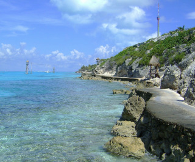
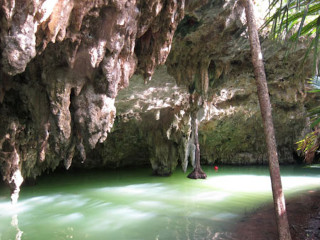
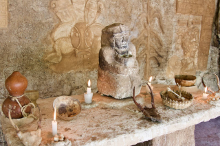

Places to See
Cozumel is filled with many amazing places to go and sights to see. Here are a few we've picked out to spotlight, but check back often for more!
Punta Sur Park
The southern end of Cozumel is reserved as an ecological park. Covering the reefs off shore, the low forests inland, and all of the beautiful beaches and lagoons inbetween, there is no better place to get in tough with nature. Go snorkeling at the Devil's Throat and the nearby reefs, observe the local wildlife which may include hatching sea turtles, and take a ride on a boat around the Colombia Lagoon with a professional guide.
Jade Caverns
When you come to Cozumel, don't live life the way you do back home. Why swim in a concrete pool, when you can swim in an all-natural cavern, with a ceiling of stone and water as green as jade. Refreshingly cool, both in temperature and figuratively! Dive off a cliff and swim around rock that has been there for centuries.
Mayans Bee Sanctuary
It sometimes surprises people when they learn how important bees were to the Mayans. One of their gods was of bees and honey, and legend says that a cup of honey and cocoa could keep a warrior running all day! The Mayan Bee Sanctuary in the Riviera Maya region provides a place for these bees, once endangered but now recovering, a place to live in safety. It is also a great place to learn about how the ancient people respected these tiny, industrious workers, and see the sweet results of their efforts pollinating the local flora.